Paint color does more work in a small bedroom than almost anywhere else in the house.
The right shade can make a cramped room feel genuinely open, while the wrong one, even a color you love in theory, can make the walls feel like they are closing in by nine at night.
It is not just about going light to "open things up," either.
Lighting, undertone, and how a color handles both morning sun and evening lamp light all matter considerably more in a tight space than they would in a sprawling, generously windowed one.
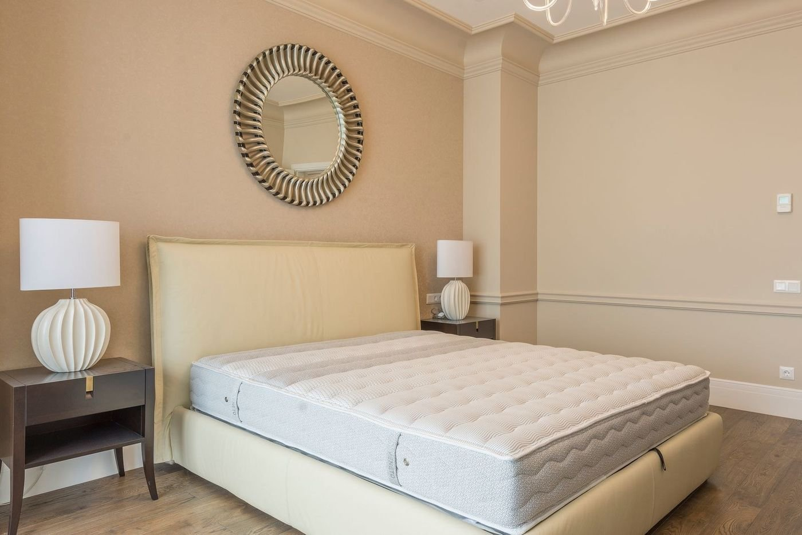

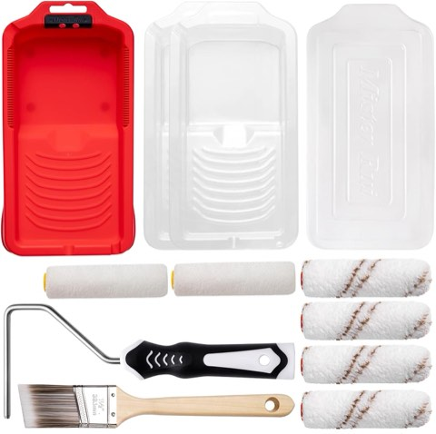
Mister Rui 4 Inch Mini Paint Roller Kit, 12 Piece, with Tray, Liners and Brush
Shop on Amazon12 Paint Colors Worth Trying
Soft Warm White
A soft warm white is the safest, most flexible choice on this list, and sometimes that is exactly what a small bedroom needs.
It maximizes light, makes the ceiling feel higher, and gives you total freedom to change up decor whenever you want without repainting.
The key is choosing a white with a warm undertone rather than a stark, cool one, the difference between a room that feels inviting and one that feels like a blank box is almost entirely in that undertone.
Layer in plants, woven textures, and a gallery of small framed prints, and warm white stops feeling plain.
It becomes the quiet backdrop that lets everything else in the room do the talking.
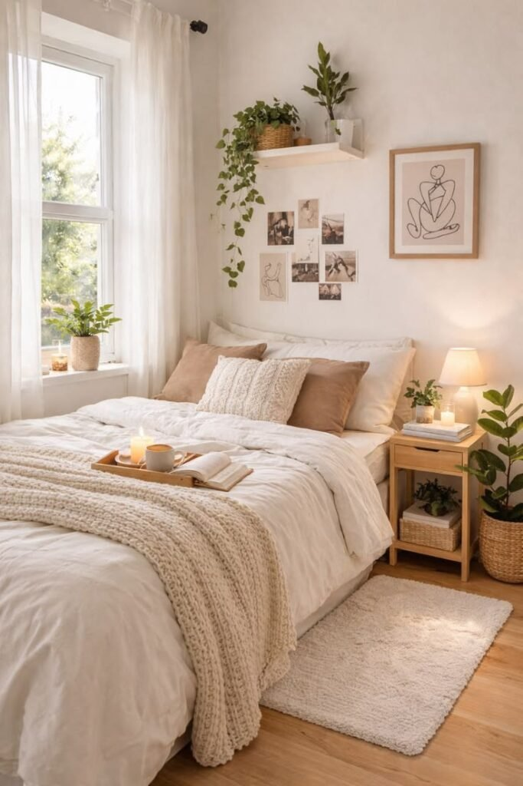

Soft Sand
Soft sand is warm neutral at its most relaxed, the kind of color that makes a small bedroom feel like a quiet retreat rather than a room you are just passing through on your way to sleep.
It leans warmer than greige and softer than beige, which makes it especially good in rooms that do not get much natural light, since it never reads as cold or clinical under lamp light alone.
Add a few candles, a knit throw, and some dried botanicals and the room practically styles itself.
This is the color for anyone who wants cozy over polished.
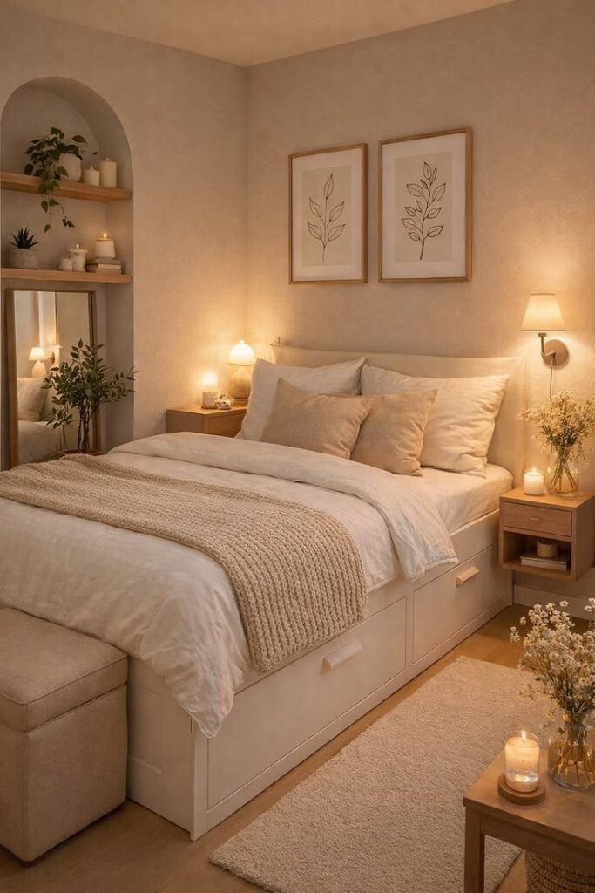
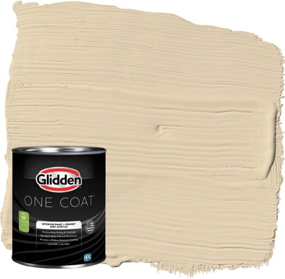
Glidden Interior Paint and Primer, Beige Almond Cream, Eggshell, 1 Quart
Shop on AmazonMuted Olive
Muted olive takes the earthiness of sage a step further into something richer and more grounded.
It is a bold move for a small bedroom, but the matte, dusty quality of the tone keeps it from feeling like it is closing in on you.
This shade genuinely comes alive with a floating shelf, a little greenery, and warm pendant lighting, the kind of setup that turns a plain small room into something that actually photographs well.
If your taste runs more earthy and collected than soft and pastel, olive is the paint color on this list most likely to feel like you.
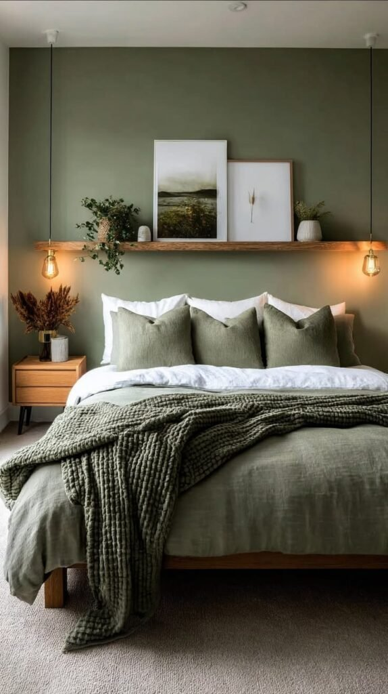
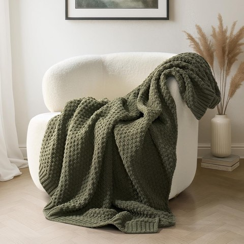
EVERGRACEHOME Chunky Chenille Knit Throw Blanket, 50 x 60 Inch, Olive Green
Shop on AmazonSoft Charcoal Accent
This one breaks the usual rule of keeping small rooms light, and it works anyway.
A soft charcoal wall brings genuine depth and coziness, especially when paired with warm lamp light instead of overhead fixtures.
The trick is restraint elsewhere, keep the bedding lighter, add warm wood nightstands, and let the dark wall anchor the room rather than swallow it whole.
Done this way, a small bedroom in charcoal does not feel smaller at all.
It feels intentional, like a boutique hotel room rather than a cramped afterthought.
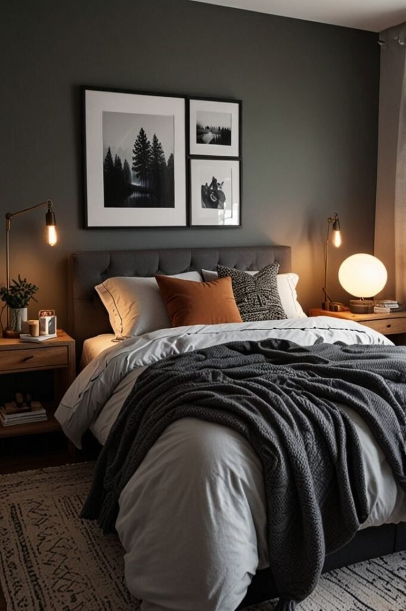


Dusty Lavender
Dusty lavender is proof that a small bedroom can handle real color without feeling overwhelming, as long as the saturation stays soft.
It brings in personality and a touch of romance while still functioning as a restful backdrop for sleep.
What keeps this shade from feeling precious is pairing it with neutral furniture, a beige headboard, cream bedding, so the lavender reads as sophisticated rather than overly sweet.
It is a genuinely good option for anyone who wants their bedroom to feel a little more expressive without sacrificing the calm a small space actually needs to feel restful.
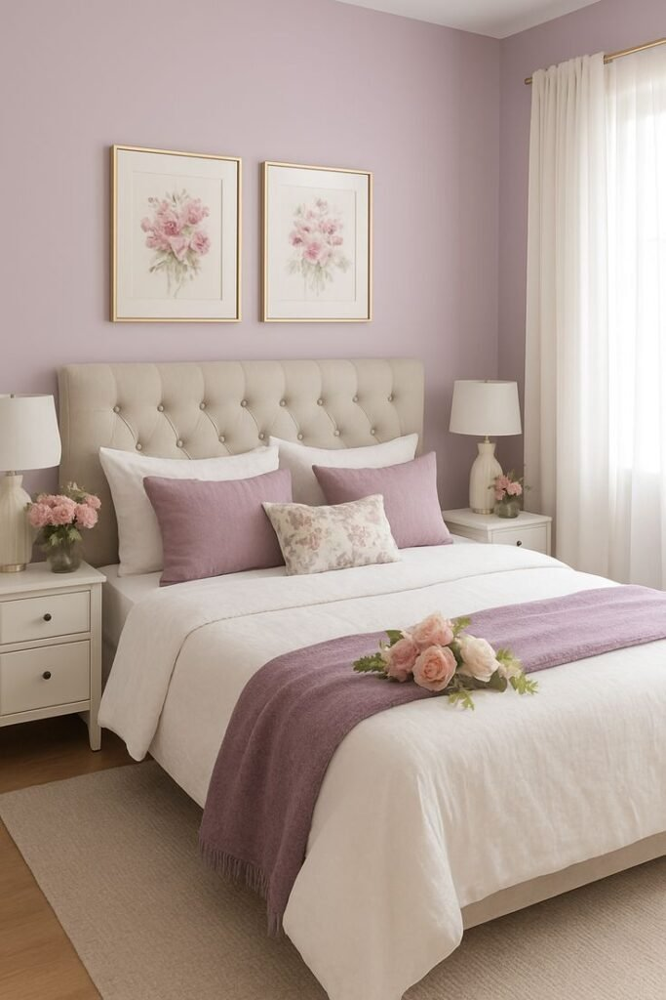
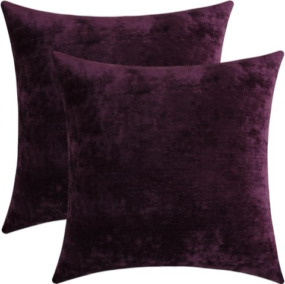
Jeneoo Plum Purple Chenille Throw Pillow Covers, Soft Square Cushion Cases
Shop on AmazonMisty Gray
Gray gets a bad reputation for feeling cold, but a misty, soft gray is a different story entirely in a small bedroom.
It is calm without being flat, and it gives you a genuinely neutral backdrop for layering in texture.
The real advantage of misty gray is how well it handles clutter.
Books, throws, and mismatched frames all look intentional against it in a way they might not against a brighter color.
If your small bedroom doubles as a reading nook or a catch-all for everyday life, this is the shade that keeps the chaos looking curated instead of messy.
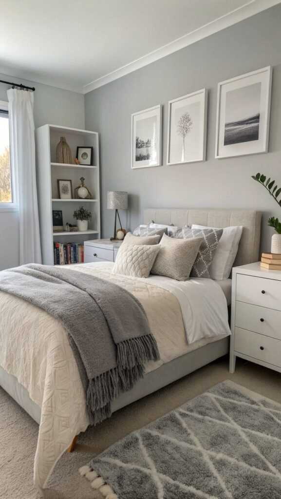
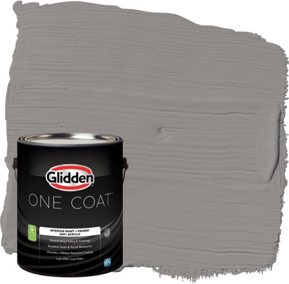
Glidden Interior Paint and Primer, Gray Antique Silver, Eggshell, 1 Gallon
Shop on AmazonBlush Beige
A soft blush leaning into beige gives a small bedroom warmth without going full pink.
It is a quieter way to bring in color if you want something softer than neutral but are not ready to commit to a statement wall.
Blush beige also flatters natural light beautifully, picking up a warm glow in the late afternoon that makes the room feel genuinely inviting rather than just decorated.
Keep the rest of the palette simple, white linens, a little dried pampas grass, maybe one framed print, and let the wall color carry the mood.
Overdecorating against this shade tends to compete rather than complement.
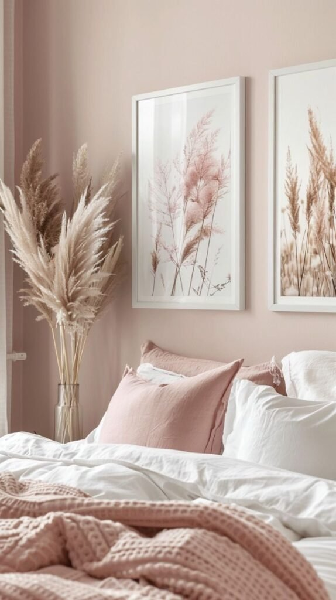


Pale Greige
Greige, that in-between of gray and beige, has stuck around for a reason.
In a small bedroom, it reads as more polished than plain beige but warmer than straight gray, which keeps the room from feeling sterile.
It is also one of the few colors that genuinely works with mismatched metals and woods, so if your nightstands and light fixtures do not quite match, greige smooths the whole thing over instead of highlighting the mismatch.
This is the shade I would recommend to anyone who wants their room to look professionally designed without actually hiring a designer.
It does a lot of the heavy lifting on its own.
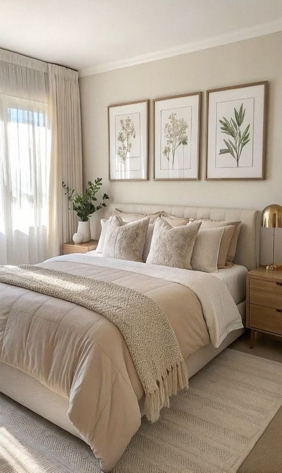

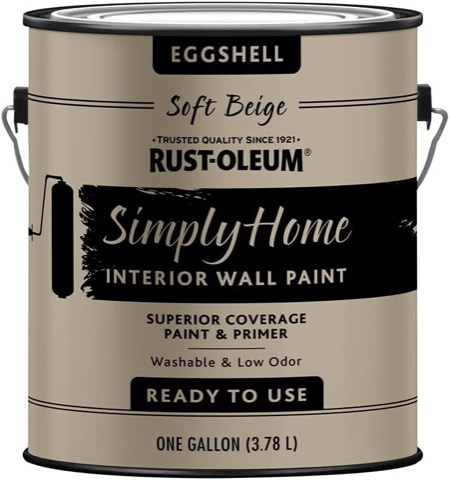
Rust-Oleum Simply Home Interior Wall Paint, Eggshell Soft Beige, 1 Gallon
Shop on AmazonWarm Ivory
Ivory is often dismissed as boring, but in a small bedroom it does something genuinely useful: it bounces every bit of available light around the room instead of absorbing it, which makes the whole space feel brighter without needing extra lamps.
It is also the easiest color to decorate around.
Warm ivory walls let textured bedding, woven baskets, and a few candles do the visual work, so the room feels layered and cozy rather than flat.
I would call it the color equivalent of a good white t-shirt, unremarkable on its own, but it makes everything else in the room look better by comparison.
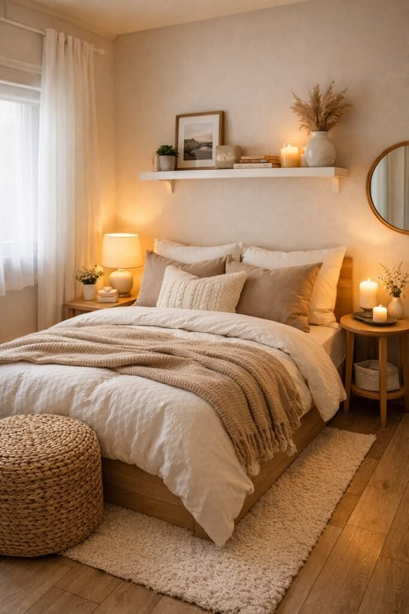

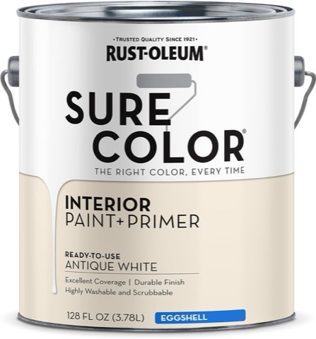
Rust-Oleum Sure Color Interior Paint and Primer, Antique White, Eggshell, 1 Gallon
Shop on AmazonLight Taupe
Taupe sits in that sweet spot between warm and neutral, which makes it one of the least risky colors you can put in a small bedroom.
It reads as sophisticated without tipping into cold, and it rarely clashes with whatever furniture you already own.
The tone also does something clever with light, it softens harsh daylight in a south-facing room and still looks intentional under warm evening bulbs, so the color stays consistent no matter the hour.
If you have ever repainted a room and immediately regretted the shade once the sun moved across it, taupe is the safer bet.
It is forgiving in a way bolder colors simply are not.
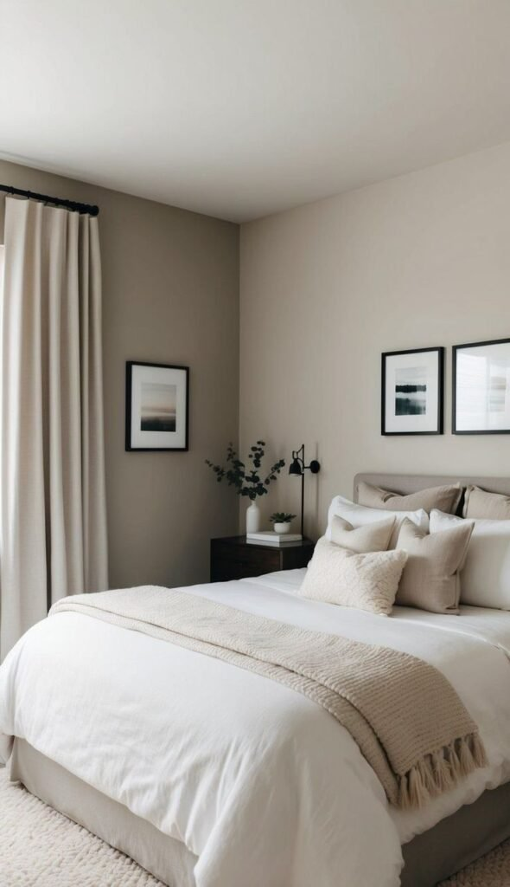
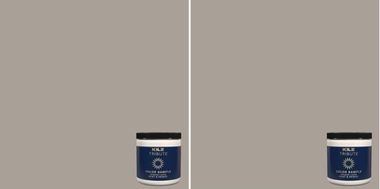
KILZ TRIBUTE Interior Paint and Primer Color Sample, Art Museum, 8 oz, 2 Pack
Shop on Amazon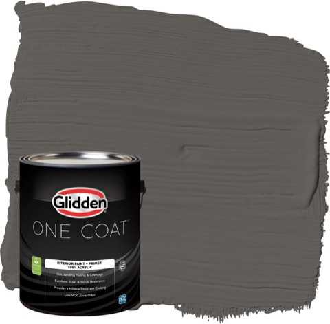
Glidden Interior Paint and Primer, Gray Stone's Throw, Eggshell, 1 Gallon
Shop on AmazonSoft Sage Green
Sage green has quietly become the go-to for anyone who wants their bedroom to feel like a retreat rather than just a place to sleep.
It is muted enough to stay soothing but has just enough depth to keep a small room from looking washed out.
What makes sage genuinely useful for tight spaces is how well it photographs in both daylight and lamp light, it does not shift into something murky once the sun goes down, which is a real risk with some deeper greens.
Many designers consider sage one of the only colors that never draws complaints, grounding without ever being heavy.
Pair it with warm wood and a few trailing plants and the room starts to feel like it was always meant to be this color.
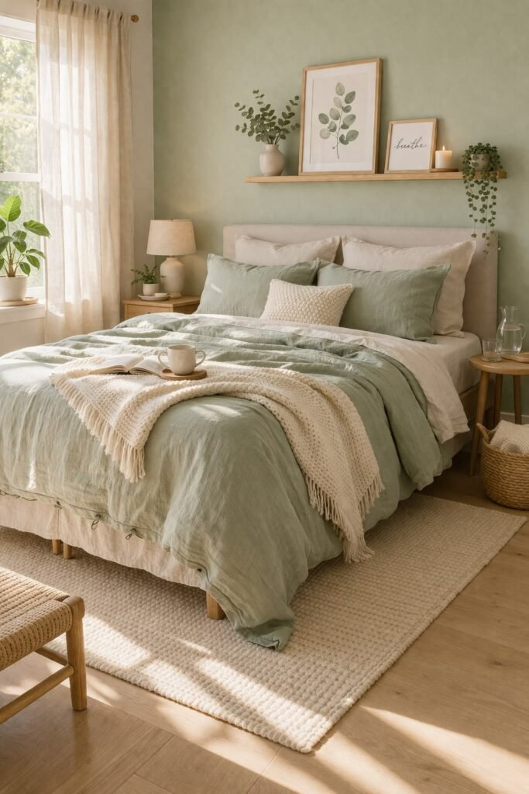

Powder Blue
Powder blue is one of the most reliable choices for a small bedroom, and it earns that reputation honestly.
The cool, airy tone pushes walls back visually, so a cramped room suddenly reads as calmer and more open than its square footage suggests.
It also happens to be one of the easiest colors to live with.
Powder blue pairs naturally with warm wood tones, woven textures, and soft linen bedding without ever competing for attention.
A friend of mine repainted her tiny guest room this shade last spring and swore the room felt a full size bigger by the time the furniture went back in, which tracks, since cool tones genuinely do recede in a way warm ones do not.
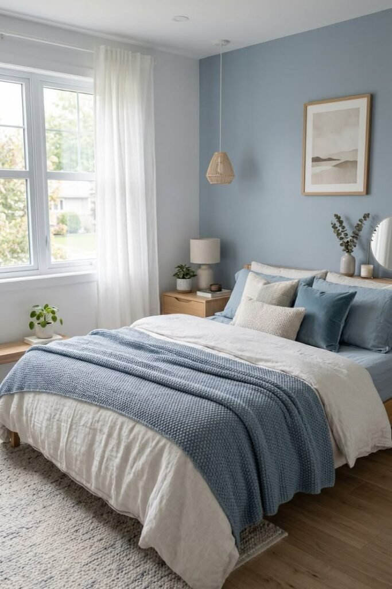

Choosing Without the Regret
The biggest mistake people make with small-bedroom paint is picking a color straight off a swatch or a screen and skipping the test patch entirely.
What looks perfect in a photo can shift completely once it is on your actual wall, under your actual light, next to your actual furniture.
Paint a sample patch and genuinely live with it for a few days, check it in the morning, at midday, and again once the lamps are on at night.
And resist the instinct to default to stark white just because the room is small.
A warm, considered neutral almost always does more for the space than the brightest option available.
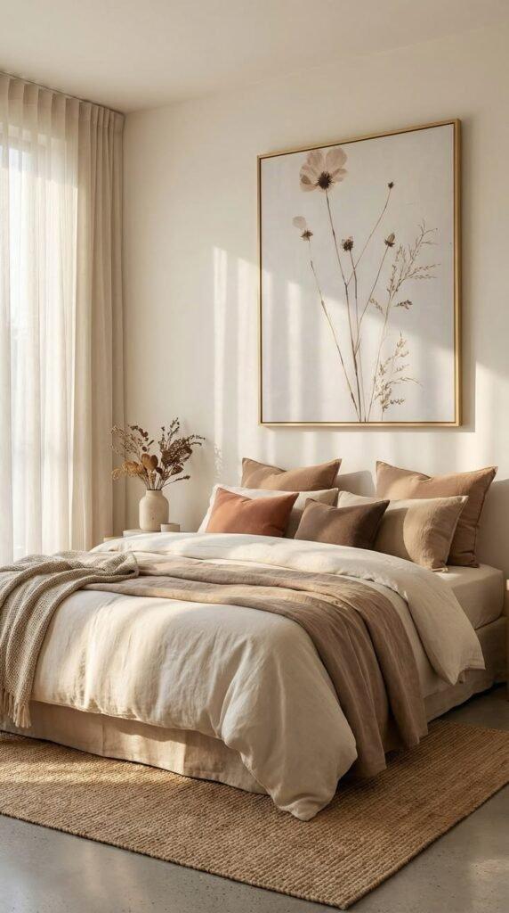
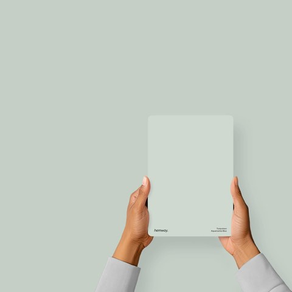
Hemway Peel and Stick Interior Paint Sample, Aquamarine Blue, A5 Damage-Free
Shop on AmazonWhy Color Hits Differently in a Small Room
A color that reads as elegant in a big, bright room can feel completely different boxed into a smaller footprint.
Small rooms amplify everything, undertones get more intense, shadows pool in corners faster, and a shade that looked neutral on a paint chip can suddenly skew warmer or cooler once it is on all four walls.
Lighting changes the equation just as much as square footage does.
A north-facing room pulls cooler and benefits from warm undertones to balance it out, while a sunnier room can handle cooler blues and grays without ever feeling cold.
The psychology matters too, muted, dusty tones tend to feel calming and help a small space feel more like a retreat than a leftover corner of the house.
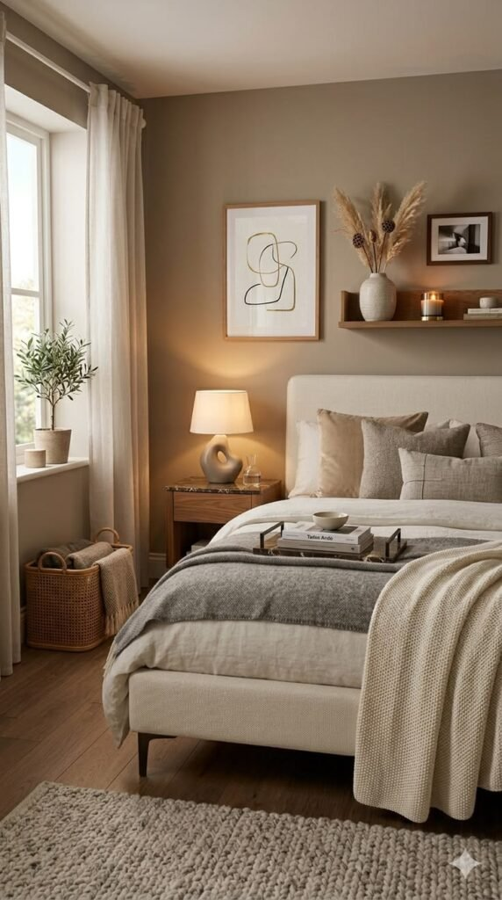
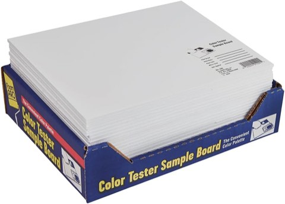
FoamPRO Color Tester Sample Boards for Comparing and Matching Paint Colors
Shop on Amazon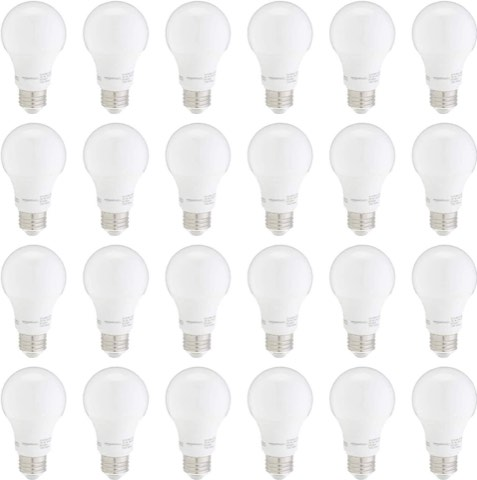
Amazon Basics A19 LED Light Bulbs, 60W Equivalent, Warm White 3000K, 10 Pack
Shop on AmazonFinal Thoughts
There is no single paint color that works for every small bedroom, it comes down to your light, your furniture, and honestly how calm or expressive you want the room to feel.
What all twelve of these shades genuinely have in common is that none of them actively fight against the room's size.
They work with it instead, quietly, every single day.
Grab a few sample pots before committing to anything, and do not rush the decision just because the walls are blank and waiting.
The right color for a small bedroom is not just the prettiest one on the wall, it is the one that still feels right at eleven at night with the lamp on and the door closed.